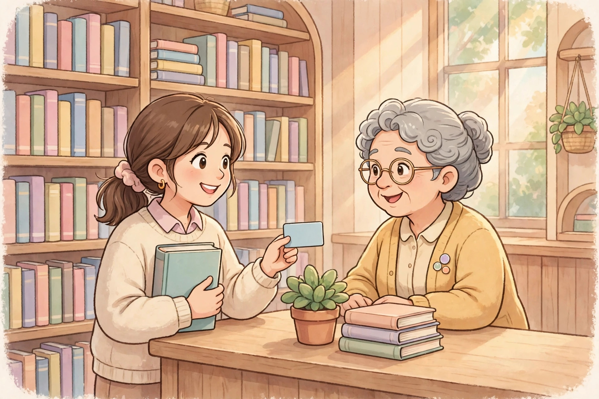

提示：如果頁面變成純文字、沒有圖片和播放按鈕，說明 Safari 閱讀器模式開了，點地址欄的書本圖標退出閱讀器，即可恢復彩色頁面。
去圖書館借書
안녕하세요, 책을 빌리고 싶어요.
去圖書館借書，學「想……」「可以……」和「到……為止」怎麼說。

안녕하세요, 책을 빌리고 싶어요.
회원카드가 있어요?
네, 여기 있어요.
이 책을 빌릴 수 있어요?
네, 두 주 동안 빌릴 수 있어요.
언제까지 반납해요?
십일월 삼십일까지 반납하세요.
연장할 수 있어요?
네, 한 번만 연장할 수 있어요.
네, 알겠어요. 감사합니다.
還沒播放，點上面的大按鈕開始。
慢速女聲朗讀，先聽一遍，再一句一句跟讀。如果大按鈕點了還是沒聲音，請點直接打開音頻，或點下面的備用朗讀。
逐句翻譯
- 你好，我想借書。
- 你有會員卡嗎？
- 有，在這裡。
- 我可以借這本書嗎？
- 可以，可以借兩個星期。
- 什麼時候要還？
- 請在十一月三十日之前歸還。
- 可以延長嗎？
- 可以，只能延長一次。
- 好，我知道了。謝謝。
文法講解
1. 「-고 싶어요」：表達自己想做某件事
是什麼：表達自己想做某件事，意思像「想……」。句型結構：動詞詞幹 + -고 싶어요。短文例句：책을 빌리고 싶어요.（我想借書。）再舉一例：커피를 마시고 싶어요.（我想喝咖啡。）容易錯的地方：-고 싶어요 是說自己的願望，不要用它來叫別人做事；想問別人「想不想」的時候也要用 -고 싶어요?，例如「想去嗎？」是 가고 싶어요?
2. 「-(으)ㄹ 수 있어요」：表示有能力或有可能做某件事
是什麼：表示有能力或有可能做某件事，意思像「可以……」「會……」。句型結構：動詞詞幹 + -(으)ㄹ 수 있어요（詞幹尾音是母音或 ㄹ 時用 -ㄹ 수 있어요，其他時候用 -을 수 있어요）。短文例句：이 책을 빌릴 수 있어요?（我可以借這本書嗎？）再舉一例：한국어로 말할 수 있어요.（我會用韓語說話。）容易錯的地方：-(으)ㄹ 수 있어요 是說「能力或可能」，不是「得到允許」；問「可不可以」的時候用 -아도/어도 돼요?，例如「可以在這裡坐嗎？」是 여기에 앉아도 돼요?
3. 「-까지」：表示時間或空間的終點
是什麼：表示時間或空間的終點，意思像「到……為止」「到……」。句型結構：時間／地點 + -까지。短文例句：십일월 삼십일까지 반납하세요.（請在十一月三十日之前歸還。）再舉一例：다섯 시까지 기다릴게요.（我等到五點。）容易錯的地方：-까지 是「到……為止」，說起點的時候要用 -부터，例如「從今天到星期五」是 오늘부터 금요일까지；不要把 -까지 和 -에 搞混，「三點見」是 세 시에 만나요，「到三點」才是 세 시까지.
常用詞彙
- 도서관 圖書館（do-seo-gwan，「도」像「都」）—— 도서관에서 책을 빌려요.（在圖書館借書。）
- 책 書（chaek，「책」像「菜克」連讀）—— 이 책을 빌릴 수 있어요?（我可以借這本書嗎？）
- 빌리다 借（bil-li-da）—— 책을 빌리고 싶어요.（我想借書。）
- 회원카드 會員卡（hoe-won-ka-deu）—— 회원카드가 있어요?（你有會員卡嗎？）
- 반납하다 歸還（ban-nap-ha-da）—— 십일월 삼십일까지 반납하세요.（請在十一月三十日之前歸還。）
- 주 週；星期（ju）—— 두 주 동안 빌릴 수 있어요.（可以借兩個星期。）
- 연장하다 延長（yeon-jang-ha-da）—— 연장할 수 있어요?（可以延長嗎？）
- 동안 期間（dong-an）—— 두 주 동안 빌릴 수 있어요.（可以借兩個星期。）
跟讀小提示
問句的句尾 -어요?、-해요? 要輕輕揚起來；第 7 句數字比較長，可以先分兩半讀：십일월／삼십일까지，「삼십일」說慢一點，把數字說清楚；「연장할 수 있어요」裡的「연장」要讀清楚。
留給你的問題
도서관에 자주 가요? 😊